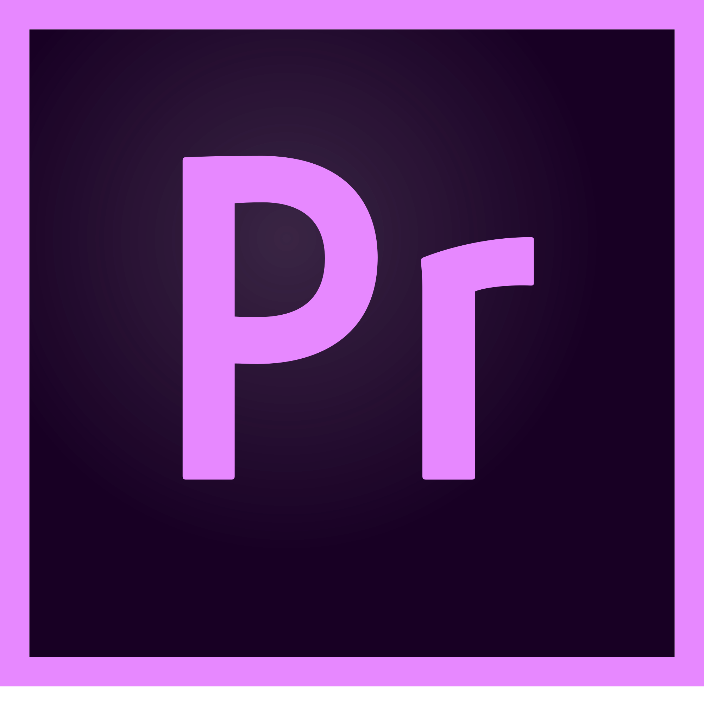
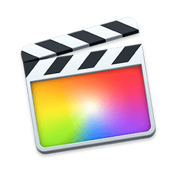

Videoschnitt
Einleitung
Es gibt zahlreiche Videoschnittprogramme und jedes dieser
Programme ist meistens auf einen bestimmten Arbeitsstil
spezialisiert. Man sollte also eine Software auswählen,
welche zu dem eigenen Workflow oder zu dem Ergebnis, welches
man erreichen möchte am besten angepasst ist. Eine weitere
sehr entscheidende Rolle spielt der Preis der Software. Je
nach dem wie oft man mit dem Programm arbeiten möchte und
wie gut das Ergebnis sein soll, sollte man festlegen, wie
viel man für eine solche Software ausgeben möchte. Die
Preise bei Videoschnittprogrammen können sehr stark
variieren. Von kostenlosen bis zu teuren Angeboten, für
welche man unter anderem monatlich zahlen muss, gibt es
massenhaft Schnittprogramme. Um dabei den Überblick zu
behalten sind hier einmal die gängigsten kostenlosen als
auch kostenpflichtigen Programme aufgelistet.
Videoschnittprogramme
Videoschnittsoftware im Vergleich
|
Adobe Premiere Pro  |
DaVinci Resolve
|
Final Cut Pro X  |
Hitfilm
|
iMovie |
Sony Vegas Pro Edit |
|
|---|---|---|---|---|---|---|
| Videospuren | unbegrenzt | 100+ | unbegrenzt | 100+ | 2 | unbegrenzt |
| Tonspuren | unbegrenzt | 100+ | unbegrenzt | 100+ | 2 | unbegrenzt |
| Kompatibilität | Windows, Mac, Linux |
Windows, Mac, Linux |
Mac | Windows, Mac |
Mac | Windows, Mac, Linux |
| Color Grading | Ja | Ja | Ja | Ja | Ja | Ja |
| VFX / Effekte | Ja - Viele | Ja - Einige | Ja - Viele | Ja - Viele | Nein | Ja - Einige |
| Videoauflösung | 4k+ | 4k | 4k | 4k | 1080p | 4k |
| Bedienung | Schwer | Schwer | Mittelmäßig | Mittelmäßig - Schwer | Leicht | Mittelmäßig |
| Shortcuts | Ja | Ja | Ja | Ja | Ja | Ja |
| Audiomixer | Ja | Ja | Ja | Nein | Nein | Ja |
| Greenscreenkompatibilität | Ja | Ja | Ja | Ja | Ja | Ja |
| Preis | 24€/Monat | kostenlos / 325€ | 329,99€ | kostenlos / 299€ | kostenlos | 299€ |
Videoschnittsoftware in Netzwerken: IServ
Da auf den PCs des Gymnasiums Allermöhe keine nennenswerten
Videoschnittprogramme vorhanden sind, wäre es sinnvoll die
Server mit einer solchen Software aufzurüsten. Dabei kann in der
Theorie jede Filmschnittsoftware über IServ installiert werden,
wodurch jeder Benutzer zugriff auf diese Software hätte. Das
wichtigste, was man dabei beachten muss ist die Kompatibilität
der Software. Damit ist gemeint, ob die Software mit dem
Betriebssystem der Computer kompatibel ist. Da iMovie und Final
Cut nur kompatibel mit Apple Computern sind, können diese beiden
Programme nicht auf den Windows PCs der Schule installiert
werden und scheiden vornerein aus. Eine ebenfalls wichtige
Bedeutung spielt natürlich der Preis, denn wenn man zum Beispiel
Adobe Premiere auf dem Schulserver installieren möchte, müsste man
die Linzenz für jeden einzellnen Rechner bezahlen. Dabei würde
eine sehr hohe Summe an monatlichen Gebühren anfallen, welche
die Schule defenitiv nicht bezahlen könnte. Deshalb ist eine
kostenlose Software die beste Option um keine Probleme mit den
Lizenzen zu bekommen und den Preis so gering wie möglich zu
halten. Dabei würden hauptsächlich DaVinci Resolve und Hitfilm
Express in Frage kommen, da beide Schnittprogramme kostenlos
sind. Die Frage ist nur, ob die PCs leistungsstark genug sind um
diese Programme zum laufen zu bringen. Da Hitfilm sehr schnell
überlastet werden kann, ist DaVinci Resolve auf jeden Fall die
Bessere alternative für die Computer der Schule.
Demnach ist DaVinci Resolve die beste Möglichkeit um IServ mit einer Videoschnittsoftware zu erweitern.
Demnach ist DaVinci Resolve die beste Möglichkeit um IServ mit einer Videoschnittsoftware zu erweitern.